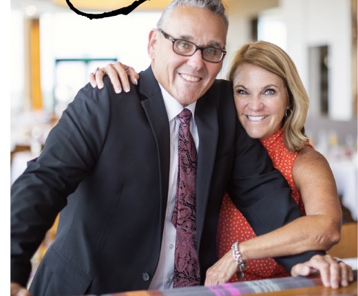

HAL + PAMELA SANTOS40+ years of lived leadership experience
CARE / WELLBEING / LEADERSHIP
We do. Through trusted friendship and care, sustainable rhythms, and experienced guidance for pastors, ministry families, and leaders in every kind of organization.
Schedule a conversation ↗
We know the weight of leadership from the inside. Our work begins with the person—not the position.
Meet Hal & Pamela →Confidential friendship and whole-life care for pastors, spouses, missionaries, and ministry families.
↗ 02 / WELLBEINGPractical workshops that help people identify depletion and build sustainable capacity.
↗ 03 / ORGANIZATIONSInclusive coaching and consulting for businesses, schools, nonprofits, agencies, and community groups.
↗“I always leave feeling like I have someone in my corner—watching my back and available to pick me up if needed.”
PASTOR JOSH